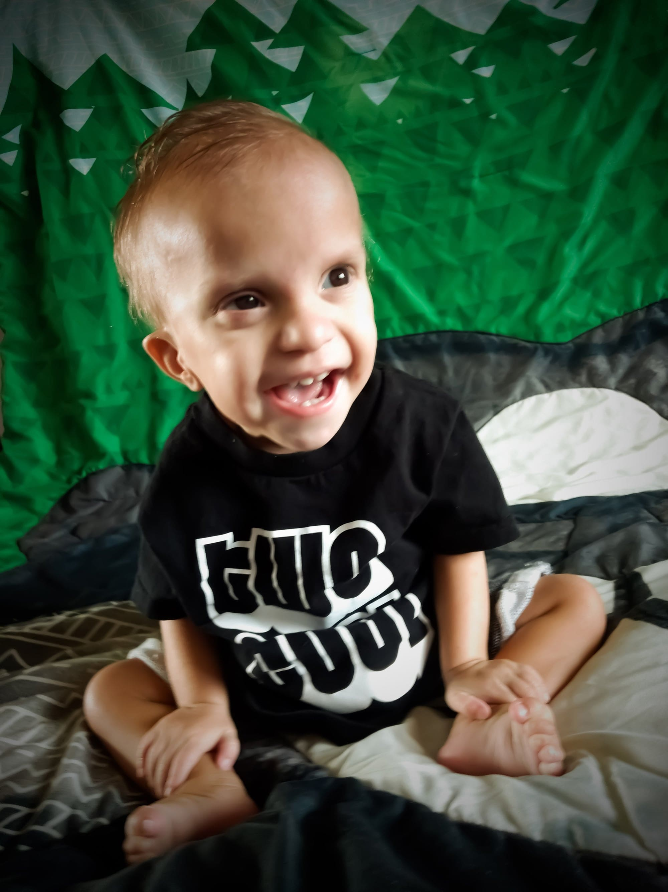

Kenai
America Rare Chromosome DeletionThis is our sweet Kenai! He was born missing a section of his genes on the 7th chromosome.
He is so far the only with these exact genes missing, or at least the only case recorded.
He was born with heart defects, cleft palate and he battles hypotonia. He is also very small by scale but he is a power house in life!
He faces many obstacles but is the ultimate radiant light! Others are drawn to him and his inspiring will to overcome. I could not be more proud of him and how much he's accomplished in his 2 years of life.
Can't wait to see what the next chapters hold with our rare warrior!
Get involved Back to all stories